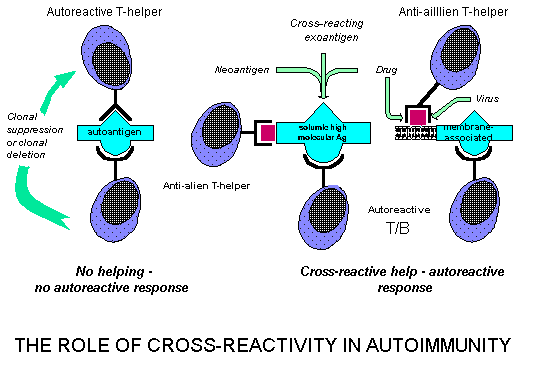

BYPASS OF SELF-TOLERANCE THROUGH CROSS-REACTION AND MOLECULAR MIMICRY: ROLE OF INFECTION
Due to parallel courses of host and parasite evolution, many exogenous pathogens display molecular resemblance with some endogenous molecules of hosting organism (see above “Immune defense against exogenous pathogens and its expenses”).
Another important aspect of molecular mimicry is the ability of immune system imitate the structure and space configuration of the antigen epitopes by means of antiidiotypes of autoantibodies. J. Lindemann (1979) coined the term “internal immunological image generation” to designate this phenomenon. This form of immunological mimicry of antigens by antiidiotypic autoantibodies is an element of physiological phenomena: it plays key role in immunological memory, in suppression and regulation of immune response. This mechanism applies principally to those conditions that are mediated by antireceptor antibodies. Anti-idiotypic antibodies (Ab2) formed against the idiotype of antihormone antibody (Ab1) would be expected to resemble the hormone (internal image). Hence such anti-idiotypic antibodies react with the hormone receptor and can mimic hormone action, or sometimes block it.
Both forms of mimicry may cause autoallergy.

The mimicry of pathogens may cause autoallergy if an individual, due to some hereditary specifics of his/her antigens and MHC receptors, poorly distinguishes some self and alien sequential determinants.
The early imaginations about the cross-reactivity of antigens were delimited with the hypothesis, that three-dimensional space conformation of some alien antigens resembles conformations of self-ones, thus provoking anti-self action of anti-alien antibodies. But, the subsequent development of immunopathology has shown that such a similarity is an exclusive rarity. Yet, it is still believed that this particular kind of cross-reaction (conformational determinants of self and alien antigens) causes the autoimmune complications of African trypanosomiasis (Chaghas’ disease), namely cardiomyopathy and megacolon. It is blamed also for some sequels of helminthiases. Another example, mentioned in all immunological readers, is the homology of polysaccharide antigens of hemolytic streptococci and those of cardiac valves. This case of cross-reaction results in development of rheumatic endocarditis after infection with some strains of Streptococci.
Much more often there is a cross-reaction between sequential determinants of autoantigens and those of alien antigens, because the evolutionary diversity of this pieces of antigen primary structure is not so great, as for tertiary conformations. At the same time, these particular sequences control the behavior of T-helpers. It is the close resemblance of short peptides, processed and presented by APCs of predisposed individuals, which is account for cross-reaction of cow milk albumin and self insulin epitopes, observed in development of insulin-dependent diabetes mellitus. The likeness of individually processed Klebsiella antigens and some connective tissue epitopes exists in ankylosing spondylopathies. In other MHC context myelin and Klebsiella peptides display an analogy, causing demyelinazing neuropathies in some individuals. There is a similarity between epitopes of Proteus mirabilis – and synovia in rheumatoid arthritis. Highly conservative heat shock proteins are homologous in Mycobacteria and humans, which probably facilitates cross-reactive autoallergy in many different autoimmune syndromes. There are common short peptides within M-protein of Streptpcocci and M-protein of myocardium cell sarcolemma, which is involved in pathogenesis of rheumatic myocarditis.
Generally speaking, a cross-reacting epitope of some germ may increase the low concentration of an autoantigen to the level sufficient for activation of silent T-helpers and facilitate their affinity to APCs (I. Roitt et al., 1994).
Sometimes, the cross-reactivity between the idiotypes of antimicrobial antibody and autoantibody is of great importance for autoallergy precipitation.
The point is that the anti-idiotypic network may be perturbed by microbial infections. If the microbial antigens or idiotypic determinants of antibodies against them cross-react with the immunoglobulin idiotype on autoreactive B-lymphocytes, production of autoantibodies may be triggered. In either case, a T-helper cell that bears anti-idiotypic receptors is initially stimulated, which in turn provides helper signals to the self-reactive B cells. So, autoallergy can be achieved without activation of autoreactive T-clones, by means of help from antiidiotypic ones. The idiotype-specific helpers may enter into play after their stimulation by APCs, engulfed the immune complex, consisting of antimicrobial antibody and microbial antigen. Such APCs may process the complex in a way leading to presentation of idiotypic peptide of antibodies. A. Cooke and A. Lidyard (1982) firstly recognized this mechanism of autoallergy. These authors postulated that K30 Klebsiella polysaccharide provokes the formation of anti-DNA and Streptococcus pyogenes triggers the production of rheumatoid factors, using this particular mechanism of idiotype cross-reaction. Please notice that chemical nature and conformation of cross-reacting epitopes in these cases is entirely different! But, there is no obstacle for indirect mimicry and idiotype-mediated cross-reaction. Similar matter may occur in non-infectious primary pathology: it is strongly suggested that natural low affinity anti-DNA autoantibodies can produce immune complexes with autoantigen, which is processed by APC. As a result of this, anti-idiotypic T-helper may be triggered by epitopes of antibody and boost the response of B-clones towards antigen part of immune complex. The cross-reactions are of special importance for the viral provocation of autoimmunity.
Viruses theoretically may trigger autoimmune reactions in several ways. First, viral antigens and autoantigens may become associated to form immunogenic units and bypass T-cell tolerance. Second, some viruses (such as EBV) are nonspecific, polyclonal B-cell mitogens and may thus induce formation of autoantibodies as described earlier. Third, viral infection may result in loss suppressor T-cell function by mechanisms that at present are not entirely clear.
Of great importance are the cross-reactions between:
- A viral antigen and idiotype of an autoantibody.
- Autoantiidiotypic antibody against anti-viral antibody and idiotype of autoantibody.
According to the idea of P. Plotz (1983) and B.N. Fields (1984), autoantibodies in viral damages are directed against the structures, which virus uses for penetration into the cell, into its genome or in course of viral reproduction. As a rule, these are either surface cell receptors (including hormone ones) or components of cell genetic apparatus. It seems highly probable, that in these cases autoantibodies are generated as autoantiidiotypes against antiviral immunoglobulins. This can explain their autoreactive specificity (as regards to their precise target) and also their biological effects.
One of the most impressive examples of autoallergy, provoked through this cross-reaction mechanism, explains the pathogenesis of Graves’ disease (diffuse toxic goiter or, as it is called in Germany, Central and Eastern Europe – von Basedov’s disease).
 The hyperthyreoidism in this
disease is caused by autoantibodies towards ganglioside part of thyreocyte TSH receptor.
The extreme degree of thyroid hyperplasia results from the effect of another autoantibody,
directed against proteic moiety of the same receptor. Farid-Nadir et al. (1983) has
demonstrated that thyroid-stimulating autoantibodies are produced due to action of
idiotype-antiidiotypic mechanism, in response to anti-TSH antibodies. Anti-TSH
immunoglobulin production, in turn, is triggered in predisposed individuals by certain
epitopes of microorganism Yersenia enterocolytica, after appropriate infection. As the
thyroid-stimulating antibodies belong to IgG, they cross the placental barrier and cause
transitory hyperthyroidism in babies begot from mothers with Graves’ disease.
The hyperthyreoidism in this
disease is caused by autoantibodies towards ganglioside part of thyreocyte TSH receptor.
The extreme degree of thyroid hyperplasia results from the effect of another autoantibody,
directed against proteic moiety of the same receptor. Farid-Nadir et al. (1983) has
demonstrated that thyroid-stimulating autoantibodies are produced due to action of
idiotype-antiidiotypic mechanism, in response to anti-TSH antibodies. Anti-TSH
immunoglobulin production, in turn, is triggered in predisposed individuals by certain
epitopes of microorganism Yersenia enterocolytica, after appropriate infection. As the
thyroid-stimulating antibodies belong to IgG, they cross the placental barrier and cause
transitory hyperthyroidism in babies begot from mothers with Graves’ disease.
The cardiomyopathy in Graves’ disease is caused by special clone of anticardiac autoantibodies (A. Nathan et al., 1983). The ophthalmopathy and pretibial edema result from the effects of still another subsets of autoantibodies against retroorbital fat cells and striated muscles. It seems, that Graves’ disease, traditionally discussed in endocrinological sections of medical textbooks, belongs, by its etiology, to complex autoimmune disorders.
The excess of autoantibodies against some epitopes of thyroid TSH receptor may in other cases cause a block of TSH action, which is manifested by hypothyroidism with increased TSH and thyroliberin concentrations. The family of autoimmune receptor thyreopathies includes also the syndromes with selective autoimmune activation (inhibition) of thyroid growth (without alteration of gland function), or thyroid hormone production (without alteration of thyroid growth). According to D. Doniach et al. (1982) and W. M. Wiersinga et al. (1984), it depends on different subsets of autoantibody idiotypes.
This and similar disorders, in fact represent a group of disregulatory receptor diseases and often are devoid of any manifestations of autoimmune tissue destruction.
NEXT CHAPTER OR